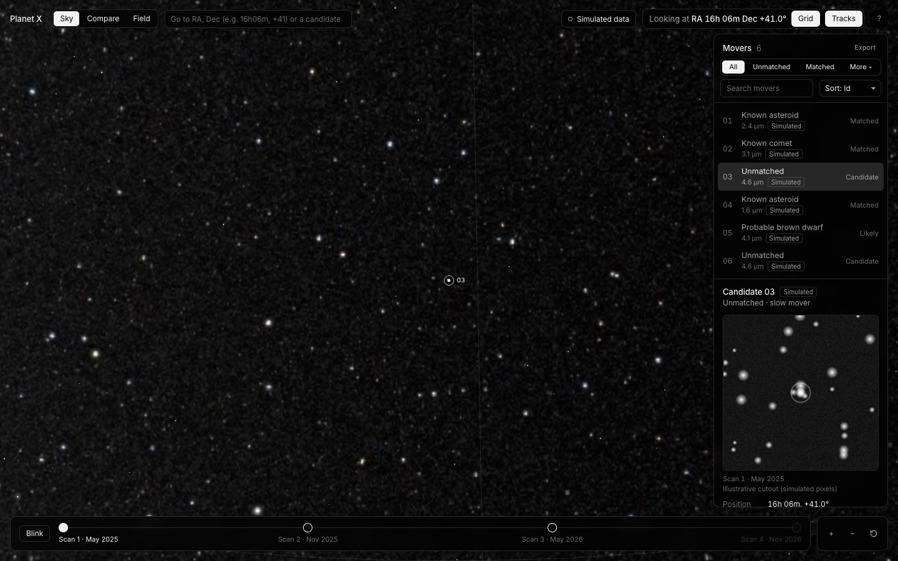

Sky
The whole sky, every mover on it.
Drag around NASA's Deep Star Maps, jump to coordinates or a candidate number, and step through the scans or blink between them.
- Tracks join each mover's positions across scans
- Filter, sort and export the Movers list